Code
import copy
import time
import numpy as np
import pandas as pd
import matplotlib.pyplot as plt
import torch
import torch.nn as nn
torch.manual_seed(0)
print("PyTorch", torch.__version__)PyTorch 2.14.1+cpu
This notebook is about looking at a network: what can be measured about it before, during and after training, and what these measurements tell us. All quantities are computed with a few lines of PyTorch and plotted with Matplotlib.
Plan 1. The architecture: drawing, a table of layers, counting parameters, trainable and frozen parameters, memory and cost, and the same with ready-made tools (torchinfo, torchview) 2. The network before training: weights, activations, saturated nodes and gradients in every layer 3. Monitoring training: loss on the training and validation sets versus epoch, gradient and weight changes per layer 4. Overfitting and the choice of the epoch with the help of the validation set 5. The final evaluation on the test set 6. A summary table of the characteristics of a model 7. Summary 8. Exercises (with solutions)
Methods for interpreting what a network has learned (e.g. class activation maps for images) need convolutional networks and are discussed in later classes.
How to run this notebook in Google Colab 1. Go to https://colab.research.google.com → File → Upload notebook (or open it from Google Drive). 2. Run cells one by one with Shift + Enter. Run them in order — later cells use variables defined earlier. 3. The required packages
numpy,matplotlib,torch,torchvisionandpandasare pre-installed in Colab;torchinfoandtorchvieware installed in Section 1.7 with%pip. 4. If the notebook state becomes inconsistent: Runtime → Restart session and run from the top.
import copy
import time
import numpy as np
import pandas as pd
import matplotlib.pyplot as plt
import torch
import torch.nn as nn
torch.manual_seed(0)
print("PyTorch", torch.__version__)PyTorch 2.14.1+cpuTwo helper functions are needed: make_mlp builds a dense network from a list of layer sizes, draw_network draws it.
def make_mlp(layer_sizes, activation=nn.Tanh):
"""Dense network with the given layer sizes; `activation` after every hidden layer, none after the output layer."""
layers = []
for i in range(len(layer_sizes) - 1):
layers.append(nn.Linear(layer_sizes[i], layer_sizes[i + 1]))
if i < len(layer_sizes) - 2:
layers.append(activation())
return nn.Sequential(*layers)The drawing function:
def draw_network(layer_sizes, activations=None, title="", max_nodes=10, ax=None,
input_labels=None, output_labels=None):
"""
Draw a fully connected network.
layer_sizes : e.g. [1, 8, 1] = 1 input, one hidden layer with 8 nodes, 1 output
activations : names of the activation functions of the hidden layers, e.g. ["tanh"]
max_nodes : larger layers are drawn with max_nodes nodes and a vertical "..." in the middle
input_labels, output_labels : optional texts written next to the input and output nodes, e.g. ["$x$"]
"""
if ax is None:
fig, ax = plt.subplots(figsize=(1.9 * len(layer_sizes) + 1, 4.2))
n_layers = len(layer_sizes)
positions = [] # list of (x, y) arrays, one per layer
for i, n in enumerate(layer_sizes):
shown = min(n, max_nodes)
y = np.linspace(-1, 1, shown) if shown > 1 else np.array([0.0])
positions.append((np.full(shown, float(i)), y * min(1.0, shown / max_nodes + 0.15)))
# connections between neighbouring layers
for i in range(n_layers - 1):
(x0, y0), (x1, y1) = positions[i], positions[i + 1]
for a in y0:
for b in y1:
ax.plot([x0[0], x1[0]], [a, b], color="0.7", lw=0.6, zorder=1)
# nodes and labels
for i, (n, (xs, ys)) in enumerate(zip(layer_sizes, positions)):
if i == 0:
color, name = "C2", "input"
elif i == n_layers - 1:
color, name = "C3", "output"
else:
act = activations[i - 1] if activations is not None else ""
color, name = "C0", f"hidden {i}" + (f"\n{act}" if act else "")
ax.scatter(xs, ys, s=260, color=color, edgecolor="k", zorder=3)
if n > max_nodes: # mark omitted nodes
ax.text(xs[0] + 0.2, 0.0, "...", rotation=90, fontsize=14, va="center", ha="center",
bbox=dict(facecolor="white", edgecolor="none", pad=1), zorder=4)
ax.text(xs[0], -1.35, f"{name}\n{n} node" + ("s" if n > 1 else ""), ha="center", va="top", fontsize=10)
if input_labels is not None:
for y, lab in zip(positions[0][1], input_labels):
ax.text(-0.18, y, lab, ha="right", va="center", fontsize=12)
if output_labels is not None:
for y, lab in zip(positions[-1][1], output_labels):
ax.text(n_layers - 1 + 0.18, y, lab, ha="left", va="center", fontsize=12)
n_params = sum(n_in * n_out + n_out for n_in, n_out in zip(layer_sizes[:-1], layer_sizes[1:]))
ax.set_title((title + "\n" if title else "") + f"layer sizes {layer_sizes}, {n_params} parameters", fontsize=11)
ax.set_xlim(-0.8, n_layers - 0.2); ax.set_ylim(-2.1, 1.3)
ax.axis("off")
return axThe network analysed in this notebook has layer sizes \([1, 64, 64, 64, 1]\) with \(\tanh\) activations: one input, three hidden layers of 64 nodes, one output.
Why this network: it is deliberately much larger than the 30 training points of Section 2 require (8513 parameters, counted in Section 1.3), so that it is able to overfit them (Section 4). Three hidden layers make the effects of depth on activations and gradients visible. \(\tanh\) is used because for it “saturated” has a simple meaning (Section 2.3). The width 64 itself is arbitrary: with widths 32 and 128 the same training run also shows a minimum of the validation loss followed by a rise.
layer_sizes = [1, 64, 64, 64, 1]
torch.manual_seed(0) # fixes the random initial weights; Section 3 uses the same seed, so it trains exactly this network
model = make_mlp(layer_sizes)
draw_network(layer_sizes, activations=["tanh"] * 3, title="the network analysed in this notebook",
input_labels=["$x$"], output_labels=["$f(x)$"])
plt.show()
print(model)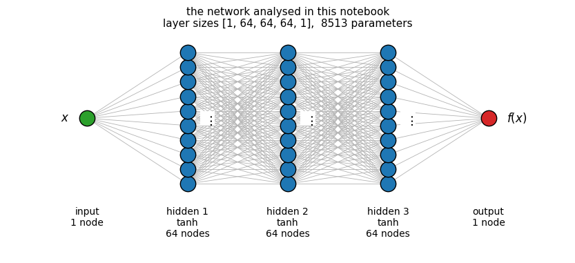
Sequential(
(0): Linear(in_features=1, out_features=64, bias=True)
(1): Tanh()
(2): Linear(in_features=64, out_features=64, bias=True)
(3): Tanh()
(4): Linear(in_features=64, out_features=64, bias=True)
(5): Tanh()
(6): Linear(in_features=64, out_features=1, bias=True)
)We pass a small batch through the layers one by one and record, for each layer, its type, the shapes of its input and output, the shapes of its parameters, and the number of parameters. A pandas.DataFrame is a convenient container for such a table.
An nn.Sequential behaves like a list of layers: for layer in model runs over them in order, and model[0], model[-1] select the first and the last layer. In the table, index is the position of the module in the Sequential; it is not the layer index \(l\) of Section 1.3. type(layer).__name__ gives the name of the class of an object as a string (e.g. 'Linear'), and p.numel() the number of entries of a tensor.
def layer_table(model, x):
"""One row per layer of an nn.Sequential model, for the input batch x."""
rows = []
for i, layer in enumerate(model):
x_in = x
x = layer(x) # pass the batch through this layer
params = list(layer.parameters())
rows.append({
"index": i,
"layer": type(layer).__name__,
"input shape": tuple(x_in.shape),
"output shape": tuple(x.shape),
"parameter shapes": [tuple(p.shape) for p in params],
"parameters": sum(p.numel() for p in params),
"trainable": sum(p.numel() for p in params if p.requires_grad),
})
return pd.DataFrame(rows)
table = layer_table(model, torch.zeros(8, 1)) # 8 dummy inputs; batch size and values are arbitrary, only the shape (B, 1) matters
table| index | layer | input shape | output shape | parameter shapes | parameters | trainable | |
|---|---|---|---|---|---|---|---|
| 0 | 0 | Linear | (8, 1) | (8, 64) | [(64, 1), (64,)] | 128 | 128 |
| 1 | 1 | Tanh | (8, 64) | (8, 64) | [] | 0 | 0 |
| 2 | 2 | Linear | (8, 64) | (8, 64) | [(64, 64), (64,)] | 4160 | 4160 |
| 3 | 3 | Tanh | (8, 64) | (8, 64) | [] | 0 | 0 |
| 4 | 4 | Linear | (8, 64) | (8, 64) | [(64, 64), (64,)] | 4160 | 4160 |
| 5 | 5 | Tanh | (8, 64) | (8, 64) | [] | 0 | 0 |
| 6 | 6 | Linear | (8, 64) | (8, 1) | [(1, 64), (1,)] | 65 | 65 |
Reading the table: each Linear layer from \(n_{\rm in}\) to \(n_{\rm out}\) nodes has a weight matrix of shape \((n_{\rm out}, n_{\rm in})\) and a bias of length \(n_{\rm out}\); activation layers have no parameters and keep the shape. The batch dimension (8) is carried through unchanged.
The layers are numbered \(l = 0, 1, \dots, L\), with \(n_0\) the number of inputs and \(n_L\) the number of outputs; for \([1, 64, 64, 64, 1]\), \(n_0 = 1\), \(n_1 = n_2 = n_3 = 64\), \(n_4 = 1\). The Linear layer from layer \(l-1\) to layer \(l\) has \(n_l n_{l-1}\) weights and \(n_l\) biases, i.e. \(n_l(n_{l-1}+1)\) parameters. The total from the table is compared with the formula \(\sum_{l=1}^{L} n_l\,(n_{l-1}+1)\) and with PyTorch’s own count.
by_formula = sum(n_out * (n_in + 1) for n_in, n_out in zip(layer_sizes[:-1], layer_sizes[1:]))
by_table = table["parameters"].sum()
by_pytorch = sum(p.numel() for p in model.parameters())
print(f"formula: {by_formula}, table: {by_table}, PyTorch: {by_pytorch}")
for n_in, n_out in zip(layer_sizes[:-1], layer_sizes[1:]):
print(f" Linear({n_in}, {n_out}): {n_out} x {n_in} weights + {n_out} biases = {n_out * (n_in + 1)}")formula: 8513, table: 8513, PyTorch: 8513
Linear(1, 64): 64 x 1 weights + 64 biases = 128
Linear(64, 64): 64 x 64 weights + 64 biases = 4160
Linear(64, 64): 64 x 64 weights + 64 biases = 4160
Linear(64, 1): 1 x 64 weights + 1 biases = 65For a network \([1, W, \dots, W, 1]\) with \(D\) hidden layers of width \(W\) the count is \(W(1+1) + (D-1)\,W(W+1) + (W+1)\). The three terms are the first layer (\(W\) weights and \(W\) biases), the \(D-1\) layers from width \(W\) to width \(W\) (\(W^2\) weights and \(W\) biases each) and the output layer (\(W\) weights and one bias). The count is therefore linear in the depth \(D\) and, for \(D\ge2\), quadratic in the width \(W\). On the log-log axes below a power law \(W^k\) is a straight line of slope \(k\).
widths = np.array([4, 8, 16, 32, 64, 128, 256])
fig, ax = plt.subplots(figsize=(7, 4.5))
for depth in [1, 2, 3, 5]:
counts = [sum(p.numel() for p in make_mlp([1] + [w] * depth + [1]).parameters()) for w in widths]
ax.loglog(widths, counts, "o-", label=f"{depth} hidden layer" + ("s" if depth > 1 else ""))
ax.loglog(widths, 3 * widths**2, "k:", label=r"$\propto W^2$") # only the slope 2 matters; the factor 3 places the line near the data
ax.set_xlabel("width $W$ (nodes per hidden layer)"); ax.set_ylabel("number of parameters"); ax.legend()
plt.show()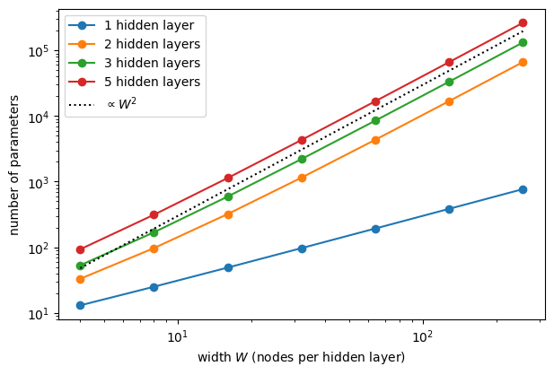
With one hidden layer the count grows only linearly (\(3W+1\)); every additional hidden layer adds a \(W\times W\) matrix, so the deeper networks follow the \(W^2\) line.
Setting requires_grad = False for a parameter freezes it: no gradient is computed for it, and an optimiser leaves it unchanged. Freezing is used, for example, when a pretrained part of a network is kept fixed. Here we freeze the first layer of a copy of the model and recount.
The copy must be made with copy.deepcopy. A plain assignment frozen_model = model only gives a second name to the same network, and a shallow copy.copy(model) creates a new container that still holds the same parameter tensors: freezing it would freeze model as well. copy.deepcopy duplicates every parameter.
frozen_model = copy.deepcopy(model) # an independent copy, so that `model` itself stays unchanged
for p in frozen_model[0].parameters(): # module 0 of the `Sequential`, i.e. the first `Linear` layer
p.requires_grad = False
trainable = sum(p.numel() for p in frozen_model.parameters() if p.requires_grad)
total = sum(p.numel() for p in frozen_model.parameters())
print(f"total parameters: {total}, trainable: {trainable}, frozen: {total - trainable} (= 64 weights + 64 biases of the first Linear layer)")total parameters: 8513, trainable: 8385, frozen: 128 (= 64 weights + 64 biases of the first Linear layer)Every parameter is stored as a float32 number of 4 bytes. One forward pass for one input needs, in every Linear layer, \(n_{\rm in}\,n_{\rm out}\) multiplications and as many additions (a multiply-add per weight). These numbers set the scale for large networks: a model with \(10^9\) parameters needs 4 GB only to store its weights.
The count of multiply-adds includes only the multiplications by weights; the bias additions and the activations add about \(n_{\rm out}\) operations per layer, which is small compared with \(n_{\rm in}n_{\rm out}\) for wide layers. In the printout 1 kB is taken as 1024 bytes.
n_bytes = sum(p.numel() * p.element_size() for p in model.parameters()) # element_size() = bytes per number
mult_adds = sum(n_in * n_out for n_in, n_out in zip(layer_sizes[:-1], layer_sizes[1:]))
print(f"memory of the parameters: {n_bytes} bytes = {n_bytes / 1024:.1f} kB")
print(f"multiply-adds per input sample in one forward pass: {mult_adds}")memory of the parameters: 34052 bytes = 33.3 kB
multiply-adds per input sample in one forward pass: 8320Everything in Sections 1.1–1.6 was computed by hand from the definitions, because this shows what each number means. In practice the same information is obtained with ready-made tools. PyTorch itself offers basic pieces (print(model), parameters(), requires_grad, modules(), and the operation counter FlopCounterMode); a table of the layers and a drawing come from small additional packages: - torchinfo: the function torchinfo.summary prints a table of the layers with output shapes and parameter counts, the numbers of trainable and frozen parameters, and estimates of memory and cost; - torchview: draws the network as a graph of layers and tensor shapes (it uses the program Graphviz, installed in Colab); - torch.utils.flop_counter.FlopCounterMode (part of PyTorch) counts the floating-point operations of a computation.
The two packages are not part of Colab’s standard installation. %pip install installs Python packages from inside a notebook into the Python environment that runs the notebook (-q: print less); it takes a few seconds and is needed once per Colab session. The note printed by %pip about restarting the kernel concerns packages that were already imported before the installation; torchinfo and torchview are imported only after it, so no restart is needed.
%pip install -q torchinfo torchviewNote: you may need to restart the kernel to use updated packages.The table of torchinfo.summary for the model of Section 1 and the batch shape \((8, 1)\) of Section 1.2. The function returns an object that is displayed as the table and whose attributes hold the numbers, so they can be compared with our own counts. verbose=0 prevents the table from being printed a second time.
import torchinfo
info = torchinfo.summary(model, input_size=(8, 1), verbose=0)
print(info)
print("total parameters: torchinfo", info.total_params, " our count", by_pytorch)
print("trainable: torchinfo", info.trainable_params)==========================================================================================
Layer (type:depth-idx) Output Shape Param #
==========================================================================================
Sequential [8, 1] --
├─Linear: 1-1 [8, 64] 128
├─Tanh: 1-2 [8, 64] --
├─Linear: 1-3 [8, 64] 4,160
├─Tanh: 1-4 [8, 64] --
├─Linear: 1-5 [8, 64] 4,160
├─Tanh: 1-6 [8, 64] --
├─Linear: 1-7 [8, 1] 65
==========================================================================================
Total params: 8,513
Trainable params: 8,513
Non-trainable params: 0
Total mult-adds (M): 0.07
==========================================================================================
Input size (MB): 0.00
Forward/backward pass size (MB): 0.01
Params size (MB): 0.03
Estimated Total Size (MB): 0.05
==========================================================================================
total parameters: torchinfo 8513 our count 8513
trainable: torchinfo 8513The columns agree with the table of Section 1.2: 128, 4160, 4160 and 65 parameters in the four Linear layers, 8513 in total. The last lines need a comment: - “Params size (MB): 0.03” is the memory of the parameters, \(8513\times4\) bytes \(= 34\,052\) bytes, the number of Section 1.6 (here in units of \(10^6\) bytes). - “Total mult-adds” is counted differently from Section 1.6. torchinfo counts one multiply-add per parameter, the biases included, and for the whole batch: \(8 \times 8513 = 68\,104 \approx 0.07\) M. Section 1.6 counted only the multiplications by weights, for one sample: \(8320 = 8513 - 193\), where 193 is the number of biases. Such counts are estimates of the cost, and different tools use different conventions; it is always necessary to check what a tool counts.
For the copy with the frozen first layer (Section 1.5), col_names selects the columns, and the column “Trainable” shows which layers are frozen:
print(torchinfo.summary(frozen_model, input_size=(8, 1), col_names=["output_size", "num_params", "trainable"], verbose=0))===================================================================================================================
Layer (type:depth-idx) Output Shape Param # Trainable
===================================================================================================================
Sequential [8, 1] -- Partial
├─Linear: 1-1 [8, 64] (128) False
├─Tanh: 1-2 [8, 64] -- --
├─Linear: 1-3 [8, 64] 4,160 True
├─Tanh: 1-4 [8, 64] -- --
├─Linear: 1-5 [8, 64] 4,160 True
├─Tanh: 1-6 [8, 64] -- --
├─Linear: 1-7 [8, 1] 65 True
===================================================================================================================
Total params: 8,513
Trainable params: 8,385
Non-trainable params: 128
Total mult-adds (M): 0.07
===================================================================================================================
Input size (MB): 0.00
Forward/backward pass size (MB): 0.01
Params size (MB): 0.03
Estimated Total Size (MB): 0.05
===================================================================================================================Frozen parameters are shown in parentheses, and the totals (8385 trainable, 128 frozen) are those of Section 1.5.
FlopCounterMode records every operation executed inside the with block. For a matrix product it counts 2 floating-point operations (one multiplication, one addition) per multiply-add; bias additions and activations are not counted. For one input sample this gives \(2\times8320\), twice the count of Section 1.6.
from torch.utils.flop_counter import FlopCounterMode
with FlopCounterMode(display=False) as counter: # display=False: no printed table (it would need the package tabulate)
model(torch.zeros(1, 1)) # one forward pass for one sample
print("floating-point operations:", counter.get_total_flops(), " = 2 x", mult_adds)floating-point operations: 16640 = 2 x 8320The number of layers of each type is obtained from model.modules(), which runs over the model itself and all layers inside it:
n_linear = sum(isinstance(m, nn.Linear) for m in model.modules()) # True counts as 1, False as 0
n_tanh = sum(isinstance(m, nn.Tanh) for m in model.modules())
print(f"Linear layers: {n_linear}, Tanh layers: {n_tanh}")Linear layers: 4, Tanh layers: 3Finally the drawing by torchview. draw_graph passes a batch of the given shape through the model and records every layer it meets; .visual_graph is the resulting picture; display(...) (available in every Jupyter/Colab notebook without import) shows it, which is needed here because the picture is created inside a try block. Every box is one layer with the shapes of its input and output; the first dimension (8) is the batch. Unlike our draw_network, which draws individual nodes (up to max_nodes per layer), this drawing shows layers and shapes, and it works for any model, also for models with skip connections. If Graphviz is missing, the except branch prints a message instead.
try:
from torchview import draw_graph
graph = draw_graph(model, input_size=(8, 1))
display(graph.visual_graph)
except Exception as err:
print("torchview drawing not available:", err)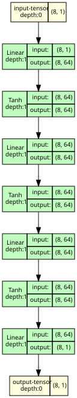
The tools are faster to use, and they are the right choice for large models. The hand-made versions of Sections 1.1–1.6 remain useful: they show what the numbers mean, and they can be extended to any quantity a tool does not provide (e.g. the saturation of the activations in Section 2.3).
Noisy measurements of a damped oscillation \(y(t) = e^{-0.2t}\cos(2t)\), \(t\in[0, 10]\), with noise of standard deviation \(\sigma = 0.1\) and deliberately few training points, so that overfitting (Section 4) becomes visible: 30 points for training, 40 for validation, 40 for testing. The input is rescaled to \([-1, 1]\).
The numbers are chosen for this purpose: - The noise \(0.1\) is about 10% of the amplitude of the signal (\(y(0) = 1\)): large enough for overfitting to be visible, small enough for the oscillation to remain recognisable. - With only 30 training points the network of Section 1 (8513 parameters) can memorise the training set. The validation and test sets are larger (40 points each) because their losses are used to choose and to evaluate the model, and a larger set gives a less noisy estimate. - The positions \(t\) are drawn uniformly at random, so the three sets cover the interval in the same way. All \(30+40+40 = 110\) points are drawn at once, and the first 30, the next 40 and the last 40 form the three sets. - t_plot (400 equally spaced values) and the corresponding network input X_plot are not data: they are a dense grid on which functions are evaluated for plotting, and on which the hidden layers are examined in Section 2.3. - The rescaling \(t \to t/5 - 1\) maps \([0, 10]\) onto \([-1, 1]\). \(\tanh\) changes only for arguments of order one; with the raw inputs (up to 10) and first-layer weights in \([-1, 1]\), 52% of the first-layer activations of the untrained network would be saturated (Section 2.3), with the rescaled inputs below 0.1%.
def damped_oscillation(t):
return np.exp(-0.2 * t) * np.cos(2 * t)
noise = 0.1
rng = np.random.default_rng(0)
t_all = rng.uniform(0, 10, 110)
y_all = damped_oscillation(t_all) + noise * rng.normal(size=110)
def to_tensor(t, y):
"""Inputs rescaled to [-1, 1] and targets, both of shape (B, 1), float32."""
X = torch.tensor(t / 5.0 - 1.0, dtype=torch.float32).reshape(-1, 1)
Y = torch.tensor(y, dtype=torch.float32).reshape(-1, 1)
return X, Y
X_train, Y_train = to_tensor(t_all[:30], y_all[:30]) # the points are in random order already
X_val, Y_val = to_tensor(t_all[30:70], y_all[30:70])
X_test, Y_test = to_tensor(t_all[70:], y_all[70:])
print("training:", tuple(X_train.shape), " validation:", tuple(X_val.shape), " test:", tuple(X_test.shape))
t_plot = np.linspace(0, 10, 400)
X_plot = torch.tensor(t_plot / 5.0 - 1.0, dtype=torch.float32).reshape(-1, 1)
fig, ax = plt.subplots(figsize=(8, 3.5))
ax.plot(t_plot, damped_oscillation(t_plot), "k", lw=1, label="true function")
ax.plot(t_all[:30], y_all[:30], "o", label="training (30)")
ax.plot(t_all[30:70], y_all[30:70], "s", ms=4, label="validation (40)")
ax.plot(t_all[70:], y_all[70:], "^", ms=4, label="test (40)")
ax.set_xlabel("$t$"); ax.set_ylabel("$y$"); ax.legend(fontsize=8, ncol=2); plt.show()training: (30, 1) validation: (40, 1) test: (40, 1)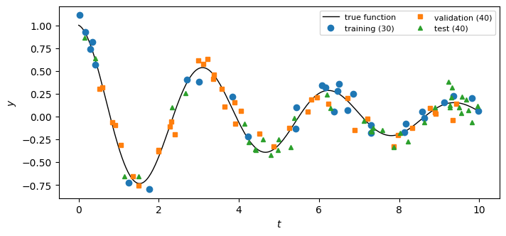
PyTorch initialises the weights of nn.Linear(n_in, n_out) uniformly in \([-1/\sqrt{n_{\rm in}},\ 1/\sqrt{n_{\rm in}}]\). The first layer (\(n_{\rm in}=1\)) therefore has weights in \([-1, 1]\), the hidden layers (\(n_{\rm in}=64\)) in \([-0.125, 0.125]\). The histograms below show the weights of every Linear layer of the untrained model, with these bounds as dashed lines. The biases are drawn from the same interval.
The scale \(1/\sqrt{n_{\rm in}}\) keeps the size of the weighted sum \(\sum_{i=1}^{n_{\rm in}} w_i x_i\) independent of the number of inputs: for independent \(w_i\) and \(x_i\) with zero mean its variance is \(n_{\rm in}\,{\rm Var}(w)\,{\rm Var}(x)\), which does not grow with \(n_{\rm in}\) when \({\rm Var}(w)\propto 1/n_{\rm in}\).
linear_layers = [layer for layer in model if isinstance(layer, nn.Linear)]
fig, axes = plt.subplots(1, len(linear_layers), figsize=(16, 3.2))
for k, (ax, layer) in enumerate(zip(axes, linear_layers)):
w = layer.weight.detach().numpy().ravel()
bound = 1 / np.sqrt(layer.in_features)
ax.hist(w, bins=30) # bins: enough to show the shape, a matter of readability
ax.axvline(-bound, color="k", ls="--"); ax.axvline(bound, color="k", ls="--")
ax.set_title(f"Linear {k + 1}: {layer.in_features} -> {layer.out_features}\n{w.size} weights")
ax.set_xlabel("weight value")
axes[0].set_ylabel("count")
fig.tight_layout(); plt.show()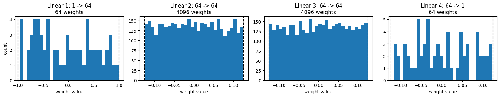
The weight histograms above are flat between the dashed bounds, as expected for a uniform distribution; the panels with only 64 weights are irregular because 64 samples are few.
To see what the hidden layers do, we pass the 400 inputs of the dense grid X_plot through the network and record the output of every activation layer. A node computes \(h = \tanh(z)\), where \(z\) is its weighted input, and \(\frac{d}{dz}\tanh z = 1 - \tanh^2 z = 1 - h^2\). A node with \(|h| > 0.95\) is saturated: its derivative \(1-h^2 < 0.0975 \approx 0.1\) is small, so gradients passing through it are damped by a factor of ten or more. The threshold 0.95 is a convention; any value between about 0.9 and 0.99 gives the same qualitative picture. The saturated fraction of a layer, shown in the panel titles below, is the fraction of activation values \(h\) (over all nodes and all 400 inputs) with \(|h|>0.95\).
def hidden_activations(model, x):
"""Outputs of all activation layers of an nn.Sequential model for the input batch x."""
outputs = []
with torch.no_grad():
for layer in model:
x = layer(x)
if not isinstance(layer, nn.Linear): # keep the outputs of the activation layers only
outputs.append(x.numpy().copy()) # .numpy() shares memory with the tensor; copy() makes the stored array independent
return outputs
acts = hidden_activations(model, X_plot)
fig, axes = plt.subplots(1, len(acts), figsize=(15, 3.2))
for k, (ax, h) in enumerate(zip(axes, acts)):
saturated = np.mean(np.abs(h) > 0.95)
ax.hist(h.ravel(), bins=40, range=(-1, 1)) # the full range of tanh, the same in every panel so that they can be compared
ax.set_title(f"hidden layer {k + 1}: std {h.std():.3f},\nsaturated {100 * saturated:.0f}%")
ax.set_xlabel("activation $h$")
axes[0].set_ylabel("count")
fig.tight_layout(); plt.show()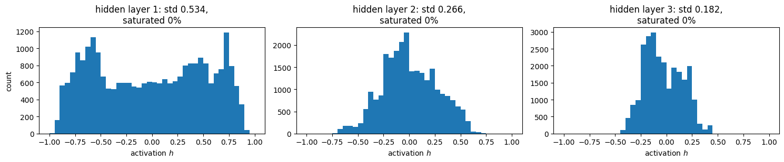
With the default initialisation practically no activation is saturated (below 0.1%), and the spread of the activations shrinks from layer to layer: the signal becomes weaker with depth.
One forward and one backward pass on the training set give the gradient of the loss with respect to every weight matrix. Its norm tells how strongly each layer would be changed by the first step of gradient descent.
model.zero_grad() first sets the stored gradients to zero, because PyTorch adds new gradients to those already in .grad. nn.functional.mse_loss(a, b) is the function form of nn.MSELoss()(a, b) and gives the same value. For a matrix, .norm() is the Frobenius norm \(\sqrt{\sum_{ij} g_{ij}^2}\), the length of the matrix viewed as one long vector.
def gradient_norms(model, X, Y):
"""Norm of dL/dW for the weight matrix of every Linear layer (one backward pass)."""
model.zero_grad()
nn.functional.mse_loss(model(X), Y).backward()
return [layer.weight.grad.norm().item() for layer in model if isinstance(layer, nn.Linear)]
for k, g in enumerate(gradient_norms(model, X_train, Y_train)):
print(f"Linear {k + 1}: |dL/dW| = {g:.2e}")Linear 1: |dL/dW| = 1.41e-02
Linear 2: |dL/dW| = 4.85e-01
Linear 3: |dL/dW| = 5.12e-01
Linear 4: |dL/dW| = 7.12e-01The gradient of the first layer is the smallest. Gradient norms of different layers are, however, not directly comparable: the first weight matrix has only \(64\) entries, the hidden ones \(64\times64 = 4096\), and the norm sums over all entries. Comparisons are meaningful for the same layer between different models or different epochs, as in Sections 2.5 and 3.2.
The analysis of Sections 2.3–2.4 is repeated for a deeper network (6 hidden layers of width 64) whose weights are drawn from \(\mathcal N(0, (c/\sqrt{n_{\rm in}})^2)\), the normal (Gaussian) distribution with mean 0 and standard deviation \(c/\sqrt{n_{\rm in}}\), for three values of \(c\). The table lists, for every hidden layer, the standard deviation of the activations and the fraction of saturated nodes, and the gradient norm of every weight matrix.
nn.init overwrite the values of an existing tensor in place (in PyTorch a trailing underscore, as in normal_, marks an in-place operation). The biases are set to zero so that only the weight scale is varied.X_plot, which samples the input interval evenly; the gradients are those of the training loss and need the training data.pivot rearranges the long table (one row per pair (\(c\), layer)) into a wide one with one row per layer and one column per quantity and value of \(c\), so that the three values of \(c\) stand side by side. round(4) only affects the display.def init_scaled(layer_sizes, c, seed=0):
torch.manual_seed(seed)
m = make_mlp(layer_sizes)
for layer in m:
if isinstance(layer, nn.Linear):
nn.init.normal_(layer.weight, mean=0.0, std=c / np.sqrt(layer.in_features))
nn.init.zeros_(layer.bias)
return m
deep_sizes = [1] + [64] * 6 + [1]
rows = []
for c in [0.5, 1.0, 3.0]:
m = init_scaled(deep_sizes, c)
acts = hidden_activations(m, X_plot)
grads = gradient_norms(m, X_train, Y_train)
for k, h in enumerate(acts):
rows.append({"c": c, "hidden layer": k + 1, "activation std": h.std(),
"saturated (%)": 100 * np.mean(np.abs(h) > 0.95), "|dL/dW| of this layer": grads[k]})
init_table = pd.DataFrame(rows)
init_table.pivot(index="hidden layer", columns="c", values=["activation std", "saturated (%)", "|dL/dW| of this layer"]).round(4)| activation std | saturated (%) | |dL/dW| of this layer | |||||||
|---|---|---|---|---|---|---|---|---|---|
| c | 0.5 | 1.0 | 3.0 | 0.5 | 1.0 | 3.0 | 0.5 | 1.0 | 3.0 |
| hidden layer | |||||||||
| 1 | 0.2449 | 0.4103 | 0.6834 | 0.0 | 0.3906 | 21.3359 | 0.0023 | 0.0651 | 5.5637 |
| 2 | 0.1226 | 0.3478 | 0.7538 | 0.0 | 0.0000 | 33.4844 | 0.0158 | 0.4404 | 33.0961 |
| 3 | 0.0649 | 0.3224 | 0.7928 | 0.0 | 0.0000 | 43.4531 | 0.0163 | 0.4131 | 28.2800 |
| 4 | 0.0349 | 0.3061 | 0.8262 | 0.0 | 0.0000 | 47.6094 | 0.0178 | 0.4165 | 18.5721 |
| 5 | 0.0165 | 0.2689 | 0.8368 | 0.0 | 0.0000 | 46.3984 | 0.0204 | 0.4521 | 13.6979 |
| 6 | 0.0072 | 0.2261 | 0.8138 | 0.0 | 0.0000 | 40.9922 | 0.0195 | 0.4305 | 12.9121 |
The weight scale therefore has to be chosen with the depth and the activation in mind; standard choices are derived from such arguments. Xavier (Glorot) initialisation uses \({\rm Var}(w) = 2/(n_{\rm in}+n_{\rm out})\), i.e. \(c = 1\) for square layers, and is meant for \(\tanh\)-like activations. He initialisation uses \({\rm Var}(w) = 2/n_{\rm in}\) (\(c = \sqrt2\)), which compensates for the activation ReLU, \(\mathrm{ReLU}(z)=\max(0,z)\), which sets negative inputs (about half of them) to zero.
The training function below is a standard training loop (full batch, Adam) with additional bookkeeping. After every epoch it records: - the training loss and the validation loss; - the norm of the gradient of every weight matrix; - the relative change of every weight matrix since the start, \(\|W(e) - W(0)\| / \|W(0)\|\), where \(e\) is the epoch; - a copy of the parameters at the epoch with the smallest validation loss so far (used in Section 4).
Details of the code: - log is a dictionary of lists, one entry appended per epoch. For the gradients and weight changes each entry is a list of 4 numbers (one per Linear layer); at the end np.array turns this list of lists into an array of shape (number of epochs, 4), so that log["grad"][:, k] is the history of layer \(k+1\). - Full batch. The 30 training points form one batch, so every epoch is a single exact gradient step and the loss curves contain no noise from a random choice of mini-batches. - lr=1e-2, 3000 epochs. \(10^{-2}\) is a common starting value for Adam on small problems; it was not tuned. With learning rates \(10^{-3}\), \(3\cdot10^{-3}\), \(10^{-2}\) and \(3\cdot10^{-2}\) the smallest validation loss is reached at epochs 753, 419, 293 and 281, and in every case the validation loss rises afterwards. 3000 epochs is far more than needed to reach the minimum, so that the overfitting after it can be seen. - W0 = [... .detach().clone() ...]. optimizer.step() changes the weights in place. Without clone() the list would hold the current weight tensors themselves and the relative change would always be zero. detach() keeps the copy out of the gradient computation. - best = {"val": np.inf, ...}. Starting from infinity, the validation loss of the first epoch is always smaller and becomes the first “best” model. - copy.deepcopy(model.state_dict()). state_dict() returns a dictionary of the parameter tensors themselves, not of copies. Without deepcopy the stored “best” state would follow every later optimiser step and end up equal to the final parameters. - model.train(), model.eval() switch layers such as dropout and batch normalisation between their training and evaluation behaviour. This network has no such layers, so here the calls change nothing; they are kept because a general training loop needs them. - The training loss of an epoch is computed before optimizer.step(), the validation loss after it. The two curves are shifted by one step, which is irrelevant on a scale of thousands of epochs. - torch.manual_seed(0) before make_mlp gives the same initial weights as in Sections 1–2: the model trained here is exactly the one analysed above.
def train_monitored(model, n_epochs=3000, lr=1e-2):
linear = [layer for layer in model if isinstance(layer, nn.Linear)]
W0 = [layer.weight.detach().clone() for layer in linear] # initial weights, for the relative change
optimizer = torch.optim.Adam(model.parameters(), lr=lr)
loss_fn = nn.MSELoss()
log = {"train": [], "val": [], "grad": [], "change": []}
best = {"val": np.inf, "epoch": None, "state": None}
for epoch in range(n_epochs):
model.train()
loss = loss_fn(model(X_train), Y_train)
optimizer.zero_grad()
loss.backward()
log["grad"].append([layer.weight.grad.norm().item() for layer in linear]) # read the gradients before the step
optimizer.step()
model.eval()
with torch.no_grad():
val_loss = loss_fn(model(X_val), Y_val).item()
log["change"].append([((layer.weight - w0).norm() / w0.norm()).item() for layer, w0 in zip(linear, W0)])
log["train"].append(loss.item())
log["val"].append(val_loss)
if val_loss < best["val"]: # remember the best model so far
best = {"val": val_loss, "epoch": epoch, "state": copy.deepcopy(model.state_dict())}
log["grad"], log["change"] = np.array(log["grad"]), np.array(log["change"])
return log, best
torch.manual_seed(0)
model = make_mlp(layer_sizes)
t0 = time.perf_counter()
log, best = train_monitored(model)
train_time = time.perf_counter() - t0
print(f"training took {train_time:.1f} s; smallest validation loss {best['val']:.3e} at epoch {best['epoch']}")training took 2.7 s; smallest validation loss 1.941e-02 at epoch 293The most important plot of every training run. The dotted line is the noise variance \(\sigma^2 = 0.01\), the smallest mean squared error that any model can reach on new data; the vertical line marks the epoch with the smallest validation loss.
fig, ax = plt.subplots(figsize=(9, 4.5))
ax.semilogy(log["train"], label="training loss")
ax.semilogy(log["val"], label="validation loss")
ax.axhline(noise**2, color="gray", ls=":", label=r"noise variance $\sigma^2$")
ax.axvline(best["epoch"], color="C3", ls="--", label=f"smallest validation loss (epoch {best['epoch']})")
ax.set_xlabel("epoch"); ax.set_ylabel("MSE"); ax.legend()
plt.show()
print(f"at the end: training loss {log['train'][-1]:.2e}, validation loss {log['val'][-1]:.2e}")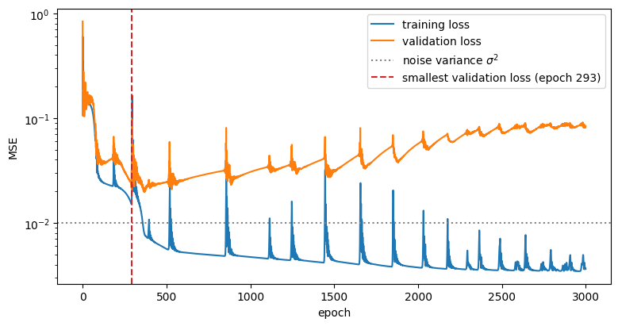
at the end: training loss 3.65e-03, validation loss 8.35e-02Two phases are visible: 1. At first both losses decrease together: the network learns the function that the training and validation points have in common. 2. Later the training loss keeps decreasing, below the noise variance, while the validation loss increases. Below \(\sigma^2\) the network can only improve on the training set by reproducing its particular noise, which is useless (in fact harmful) for new points. This is overfitting. (With 30 points even the true function has a training MSE that fluctuates by about \(\sigma^2\sqrt{2/30} \approx 25\%\) around \(\sigma^2\), so only a training loss well below \(\sigma^2\), as here at the end of training, is a clear sign of fitting the noise.)
The gradient norms vary over several orders of magnitude and are plotted on a logarithmic axis; the relative weight changes stay between 0 and about 3 and are readable on a linear axis.
fig, axes = plt.subplots(1, 2, figsize=(14, 4))
for k in range(log["grad"].shape[1]):
axes[0].semilogy(log["grad"][:, k], lw=1, label=f"Linear {k + 1}")
axes[1].plot(log["change"][:, k], label=f"Linear {k + 1}")
axes[0].set_xlabel("epoch"); axes[0].set_ylabel(r"$\|\partial L/\partial W\|$"); axes[0].legend(fontsize=8)
axes[1].set_xlabel("epoch"); axes[1].set_ylabel(r"$\|W(e) - W(0)\|\,/\,\|W(0)\|$"); axes[1].legend(fontsize=8)
axes[1].axvline(best["epoch"], color="C3", ls="--")
fig.tight_layout(); plt.show()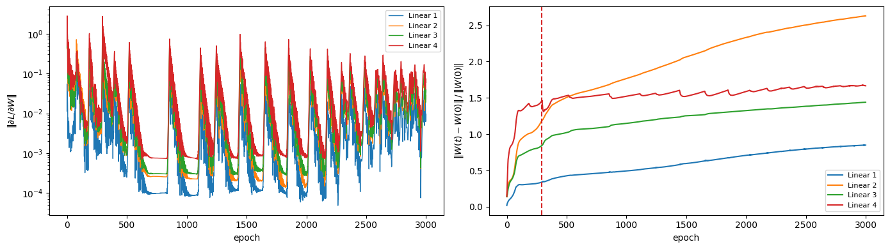
train_monitored kept a copy of the parameters from the epoch with the smallest validation loss. Loading it gives the model that would have been obtained by stopping the training there (early stopping). Both models are compared with the data.
A state_dict contains only numbers, not the architecture. A network with the same layer sizes is therefore built first, and its random initial parameters are then overwritten by load_state_dict. final_model = model is not a copy, only a second name for the trained network.
final_model = model # parameters after the last epoch
best_model = make_mlp(layer_sizes)
best_model.load_state_dict(best["state"]) # parameters from the epoch with the smallest validation loss
fig, ax = plt.subplots(figsize=(9, 4.5))
ax.plot(t_plot, damped_oscillation(t_plot), "k", lw=1, label="true function")
ax.plot(t_all[:30], y_all[:30], "o", color="C0", label="training data")
with torch.no_grad():
ax.plot(t_plot, final_model(X_plot), "C3", lw=1.5, label=f"after the last epoch ({len(log['train'])})")
ax.plot(t_plot, best_model(X_plot), "C2", lw=2, label=f"at the best epoch ({best['epoch']})")
ax.set_xlabel("$t$"); ax.set_ylabel("$y$"); ax.legend(fontsize=8); plt.show()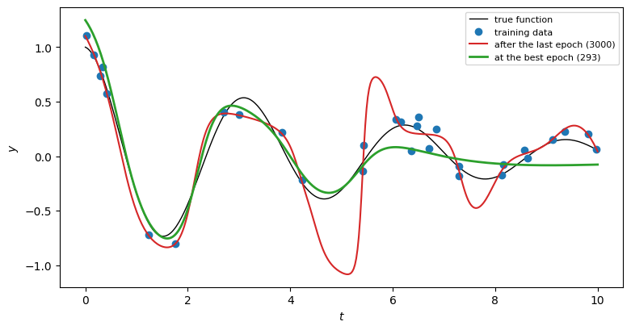
Now, and only now, the chosen model is evaluated on the test set. Its test loss is the estimate of the error on new data that would be reported. For illustration only, the test loss of the overfitted final model is printed as well; it was not used to make any choice.
loss_fn = nn.MSELoss()
best_model.eval(); final_model.eval()
with torch.no_grad():
test_best = loss_fn(best_model(X_test), Y_test).item()
test_final = loss_fn(final_model(X_test), Y_test).item()
pred_test = best_model(X_test).numpy().ravel()
print(f"chosen model (best epoch {best['epoch']}): test MSE = {test_best:.3e}")
print(f"final model (for comparison only) : test MSE = {test_final:.3e}")
print(f"noise variance : {noise**2:.3e}")
residuals = pred_test - Y_test.numpy().ravel()
print(f"residuals: mean {residuals.mean():+.3f}, standard deviation {residuals.std():.3f} (noise level sigma = {noise})")
fig, axes = plt.subplots(1, 3, figsize=(16, 4))
axes[0].plot(Y_test.numpy(), pred_test, "o")
lims = [Y_test.min().item() - 0.1, Y_test.max().item() + 0.1] # the margin 0.1 only extends the diagonal beyond the data
axes[0].plot(lims, lims, "k--", lw=1)
axes[0].set_xlabel("measured $y$ (test set)"); axes[0].set_ylabel("predicted $y$"); axes[0].set_title("prediction vs. measurement")
axes[1].hist(residuals, bins=12) # few bins: only 40 residuals
axes[1].set_xlabel("residual (predicted - measured)"); axes[1].set_ylabel("count"); axes[1].set_title(f"residuals, std {residuals.std():.3f}")
axes[2].plot(t_all[70:], residuals, "o"); axes[2].axhline(0, color="k", lw=1)
axes[2].set_xlabel("$t$"); axes[2].set_ylabel("residual"); axes[2].set_title("residuals vs. input")
fig.tight_layout(); plt.show()chosen model (best epoch 293): test MSE = 3.197e-02
final model (for comparison only) : test MSE = 7.065e-02
noise variance : 1.000e-02
residuals: mean -0.027, standard deviation 0.177 (noise level sigma = 0.1)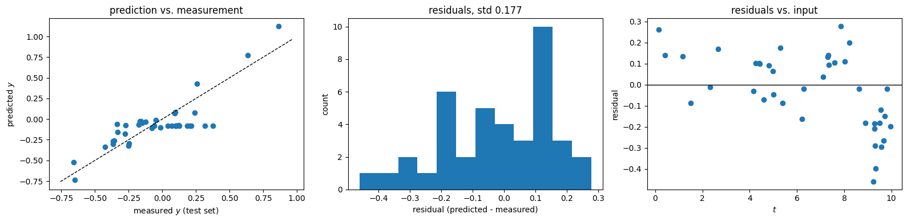
residuals.std() subtracts the mean residual, so a constant offset of the model does not enter it, while \(\sqrt{\text{test MSE}}\) includes it. Here the residual standard deviation (in the title of the middle panel) is larger than \(\sigma\) by much more than this fluctuation, and the right panel shows why: for \(t \gtrsim 9\) all residuals are negative, i.e. the model is systematically too low in this region (it misses the last oscillation, see Section 4), and between \(t \approx 7\) and \(8.3\) all residuals are positive (the minimum of \(y\) near \(t \approx 7.9\) is too shallow in the model). In the left panel the points with \(t \gtrsim 9\) form a horizontal row: the model predicts almost the same value, about \(-0.08\), for all of them, whatever the measured value. Residual plots reveal such systematic errors, which a single number such as the test MSE hides.
The quantities of this notebook are collected for two models trained on the same data: the network analysed so far and a small network with one hidden layer of 16 nodes. Both are evaluated at their best epoch. The small network (\(16\cdot 2 + 17 = 49\) parameters) serves as a contrast: with one narrow hidden layer it can represent only smooth functions, so it overfits much more slowly; its smallest validation loss is reached only at epoch 2880, near the end of the 3000 epochs, and at that epoch its training loss, \(7.8\cdot10^{-3}\), is only slightly below \(\sigma^2\). (With 30 points the training MSE of even the true function fluctuates by about \(\sigma^2\sqrt{2/30} \approx 25\%\) around \(\sigma^2\).) Its width 16 is arbitrary.
DataFrame.style.format changes only how the numbers are displayed, not the stored values: "{:.2f}" means two decimal places, "{:.2e}" scientific notation with two decimals. The training time depends on the computer and on other running processes; it is useful only to compare models trained on the same machine.
def characterise(sizes, seed=0):
torch.manual_seed(seed)
m = make_mlp(sizes)
t0 = time.perf_counter()
lg, bst = train_monitored(m)
elapsed = time.perf_counter() - t0
m.load_state_dict(bst["state"]); m.eval()
with torch.no_grad():
tr = loss_fn(m(X_train), Y_train).item()
te = loss_fn(m(X_test), Y_test).item()
return {
"layer sizes": str(sizes),
"parameters": sum(p.numel() for p in m.parameters()),
"memory (kB)": sum(p.numel() * p.element_size() for p in m.parameters()) / 1024,
"best epoch": bst["epoch"],
"train MSE": tr, "val MSE": bst["val"], "test MSE": te,
"train time (s)": elapsed,
}
summary_table = pd.DataFrame([characterise([1, 16, 1]), characterise(layer_sizes)])
summary_table.style.format({"memory (kB)": "{:.2f}", "train MSE": "{:.2e}", "val MSE": "{:.2e}", "test MSE": "{:.2e}", "train time (s)": "{:.1f}"})| layer sizes | parameters | memory (kB) | best epoch | train MSE | val MSE | test MSE | train time (s) | |
|---|---|---|---|---|---|---|---|---|
| 0 | [1, 16, 1] | 49 | 0.19 | 2880 | 7.80e-03 | 1.49e-02 | 1.43e-02 | 1.8 |
| 1 | [1, 64, 64, 64, 1] | 8513 | 33.25 | 293 | 2.83e-02 | 1.94e-02 | 3.20e-02 | 2.7 |
Reading the table: with these 30 training points the small network has the smaller validation and test errors (test MSE about 0.014 against 0.032). Here, with few data, more parameters do not give a better model. The large network reaches its best validation loss early (epoch 293), when its training error is still above the noise variance; later it improves only on the training set. The small network has a lower training error at its best epoch, because that epoch comes much later.
Such a table is the minimum documentation of a trained model: architecture and size, how it was selected (best epoch by validation loss), and its errors on the three data sets. Only the test column is an unbiased estimate of the error on new data.requires_grad), memory (\(4\) bytes per float32 parameter) and multiply-adds per sample. Parameters grow linearly with depth and quadratically with width.The image classifier nn.Sequential(nn.Flatten(), nn.Linear(784, 128), nn.ReLU(), nn.Linear(128, 64), nn.ReLU(), nn.Linear(64, 10)) assigns a \(28\times28\) grey-scale image of a handwritten digit (the MNIST data set) to one of 10 classes, the digits \(0, \dots, 9\): it has \(784\) inputs, one per pixel, and 10 outputs, one per class. 1. Load the MNIST test images (torchvision.datasets.MNIST, train=False) and show one example of every class with its label. 2. Draw the network and produce its layer table with layer_table for a batch of 16 test images (pixel values divided by 255). 3. Which layer holds most of the parameters, and what fraction? Why is it this layer? 4. Compute the memory of the parameters and the number of multiply-adds per image. 5. Freeze everything except the last layer and report the number of trainable parameters. Check the totals with torchinfo.summary (Section 1.7).
import contextlib, io
# 1) data: the MNIST test set (random numbers if the download fails)
try:
from torchvision import datasets
with contextlib.redirect_stdout(io.StringIO()), contextlib.redirect_stderr(io.StringIO()):
mnist = datasets.MNIST(root="data", train=False, download=True)
images_raw, labels = mnist.data, mnist.targets
except Exception as err:
print("MNIST could not be loaded:", err)
images_raw = torch.randint(0, 256, (10000, 28, 28), dtype=torch.uint8)
labels = torch.randint(0, 10, (10000,))
images = images_raw.float() / 255 # pixel values in [0, 1]
fig, axes = plt.subplots(1, 10, figsize=(12, 1.8))
for k, ax in enumerate(axes):
first = torch.nonzero(labels == k)[0, 0] # position of the first image of class k
ax.imshow(images_raw[first], cmap="gray_r")
ax.set_title(f"class {k}"); ax.set_xticks([]); ax.set_yticks([])
plt.show()
clf = nn.Sequential(nn.Flatten(), nn.Linear(784, 128), nn.ReLU(), nn.Linear(128, 64), nn.ReLU(), nn.Linear(64, 10))
# 2) drawing and table
draw_network([784, 128, 64, 10], activations=["ReLU", "ReLU"], title="image classifier",
output_labels=[f"{k}" for k in range(10)])
plt.show()
clf_table = layer_table(clf, images[:16]) # 16 test images, shape (16, 28, 28)
print(clf_table.to_string(index=False)) # print the whole table without the row-number column
# 3) share of the largest layer
total = clf_table["parameters"].sum()
largest = clf_table.loc[clf_table["parameters"].idxmax()] # idxmax(): row label of the largest value; .loc[label]: that row
print(f"\nlargest layer: index {largest['index']} ({largest['layer']}) with {largest['parameters']} of {total} parameters "
f"= {100 * largest['parameters'] / total:.1f}%")
# It is the first Linear layer: every one of its 128 nodes has one weight per pixel, 784 x 128 weights in total.
# 4) memory and multiply-adds
n_bytes = sum(p.numel() * p.element_size() for p in clf.parameters())
mult_adds = sum(l.in_features * l.out_features for l in clf if isinstance(l, nn.Linear))
print(f"memory: {n_bytes / 1024:.0f} kB, multiply-adds per image: {mult_adds}")
# 5) freeze all parameters, then unfreeze the last layer
for p in clf.parameters():
p.requires_grad = False
for p in clf[-1].parameters():
p.requires_grad = True
print("trainable parameters after freezing:", sum(p.numel() for p in clf.parameters() if p.requires_grad), "(= 64 x 10 + 10)")
info = torchinfo.summary(clf, input_size=(16, 28, 28), verbose=0)
print("torchinfo: total", info.total_params, " trainable", info.trainable_params)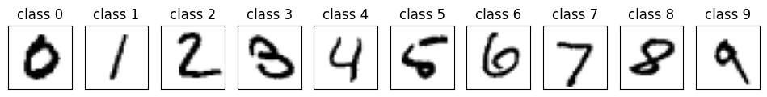
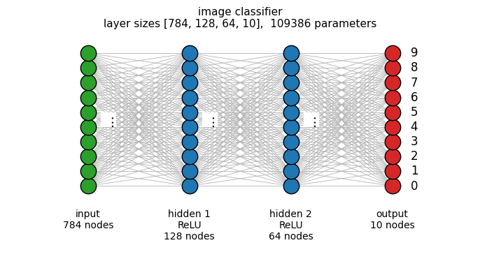
index layer input shape output shape parameter shapes parameters trainable
0 Flatten (16, 28, 28) (16, 784) [] 0 0
1 Linear (16, 784) (16, 128) [(128, 784), (128,)] 100480 100480
2 ReLU (16, 128) (16, 128) [] 0 0
3 Linear (16, 128) (16, 64) [(64, 128), (64,)] 8256 8256
4 ReLU (16, 64) (16, 64) [] 0 0
5 Linear (16, 64) (16, 10) [(10, 64), (10,)] 650 650
largest layer: index 1 (Linear) with 100480 of 109386 parameters = 91.9%
memory: 427 kB, multiply-adds per image: 109184
trainable parameters after freezing: 650 (= 64 x 10 + 10)
torchinfo: total 109386 trainable 650In practice training is stopped automatically once the validation loss has not improved for a number of epochs (the patience). Modify the training loop so that it stops after 200 epochs without a new minimum of the validation loss, restore the best parameters, and report the stopping epoch, the best epoch, the time saved compared with 3000 epochs, and the test loss of the restored model.
The patience must be longer than the temporary rises of the validation loss (the spikes of Section 3.2), otherwise training stops at one of them. With the network and data of this notebook a patience of 100 epochs stops at epoch 213 with the best epoch 113 and validation loss 0.036, nearly twice the minimum found in Section 3; patience 200 and 500 both find the minimum at epoch 293.
def train_early_stopping(model, max_epochs=3000, patience=200, lr=1e-2):
optimizer = torch.optim.Adam(model.parameters(), lr=lr)
best_val, best_epoch, best_state = np.inf, 0, None
train_hist, val_hist = [], []
for epoch in range(max_epochs):
model.train()
loss = loss_fn(model(X_train), Y_train)
optimizer.zero_grad(); loss.backward(); optimizer.step()
model.eval()
with torch.no_grad():
val = loss_fn(model(X_val), Y_val).item()
train_hist.append(loss.item()); val_hist.append(val)
if val < best_val:
best_val, best_epoch, best_state = val, epoch, copy.deepcopy(model.state_dict())
elif epoch - best_epoch >= patience: # no improvement for `patience` epochs
break # leave the loop; `epoch` keeps its last value
model.load_state_dict(best_state) # restore the best parameters
return epoch, best_epoch, train_hist, val_hist
torch.manual_seed(0)
m = make_mlp(layer_sizes)
t0 = time.perf_counter()
stop_epoch, best_epoch, tr_h, va_h = train_early_stopping(m)
elapsed = time.perf_counter() - t0
with torch.no_grad():
test_mse = loss_fn(m(X_test), Y_test).item()
print(f"stopped at epoch {stop_epoch}, best epoch {best_epoch}, {elapsed:.1f} s instead of about {train_time:.1f} s for 3000 epochs")
print(f"test MSE of the restored model: {test_mse:.3e}")
fig, ax = plt.subplots(figsize=(8, 4))
ax.semilogy(tr_h, label="training"); ax.semilogy(va_h, label="validation")
ax.axvline(best_epoch, color="C3", ls="--", label="best epoch"); ax.axvline(stop_epoch, color="k", ls=":", label="stop")
ax.set_xlabel("epoch"); ax.set_ylabel("MSE"); ax.legend(); plt.show()stopped at epoch 493, best epoch 293, 0.4 s instead of about 2.7 s for 3000 epochs
test MSE of the restored model: 3.197e-02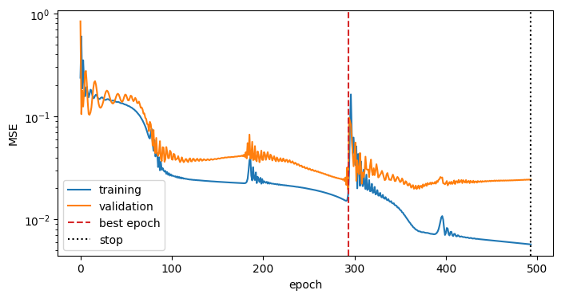
Repeat the training of Section 3 (same network, same validation set) with 30, 100 and 300 training points (generate the additional points with the same function and noise). Plot the training and validation loss versus epoch for the three cases in one figure (same colour per case, solid = training, dashed = validation). How does the gap between training and validation loss change with the amount of data?
rng_extra = np.random.default_rng(10) # a different seed: new, independent points
t_extra = rng_extra.uniform(0, 10, 270)
y_extra = damped_oscillation(t_extra) + noise * rng_extra.normal(size=270)
X_val_fixed, Y_val_fixed = X_val, Y_val # only new names: the validation set is the same in all three runs
fig, ax = plt.subplots(figsize=(9, 4.5))
for color, n in zip(["C0", "C1", "C2"], [30, 100, 300]):
t_n = np.concatenate([t_all[:30], t_extra[:n - 30]]) # the original 30 points plus new ones (np.concatenate joins arrays end to end)
y_n = np.concatenate([y_all[:30], y_extra[:n - 30]])
Xn, Yn = to_tensor(t_n, y_n)
torch.manual_seed(0)
m = make_mlp(layer_sizes)
opt = torch.optim.Adam(m.parameters(), lr=1e-2)
tr_h, va_h = [], []
for epoch in range(3000):
loss = loss_fn(m(Xn), Yn)
opt.zero_grad(); loss.backward(); opt.step()
with torch.no_grad():
va_h.append(loss_fn(m(X_val_fixed), Y_val_fixed).item())
tr_h.append(loss.item())
ax.semilogy(tr_h, color=color, label=f"{n} points: training")
ax.semilogy(va_h, color=color, ls="--", label=f"{n} points: validation")
print(f"{n:3d} training points: final training MSE {tr_h[-1]:.2e}, final validation MSE {va_h[-1]:.2e}, smallest validation MSE {min(va_h):.2e}")
ax.axhline(noise**2, color="gray", ls=":", label="noise variance")
ax.set_xlabel("epoch"); ax.set_ylabel("MSE"); ax.legend(fontsize=8, ncol=2); plt.show()
# With more data the network cannot reproduce the noise of every training point any more: the training loss stays
# closer to the noise variance, the validation loss rises less, and the gap between the two shrinks. 30 training points: final training MSE 3.65e-03, final validation MSE 8.35e-02, smallest validation MSE 1.94e-02100 training points: final training MSE 6.76e-03, final validation MSE 1.85e-02, smallest validation MSE 1.34e-02300 training points: final training MSE 9.38e-03, final validation MSE 9.87e-03, smallest validation MSE 9.35e-03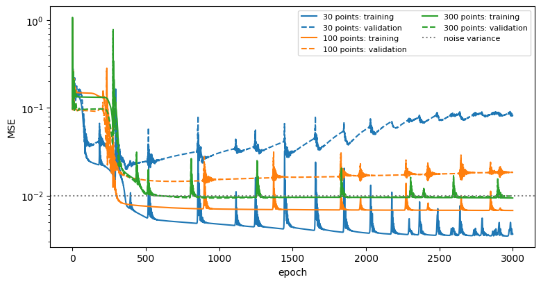
Freeze all layers of a fresh make_mlp(layer_sizes) except the last Linear layer and train it as in Section 3. The network is then a linear combination of 64 fixed random functions (the outputs of the last hidden layer) plus a constant (the bias): 65 trainable parameters. Compare the number of trainable parameters, the smallest validation loss and the fit with the fully trained network. Plot the 64 fixed functions.
torch.manual_seed(0)
m_last = make_mlp(layer_sizes)
for p in m_last.parameters():
p.requires_grad = False
for p in m_last[-1].parameters(): # the last Linear layer stays trainable
p.requires_grad = True
print("trainable parameters:", sum(p.numel() for p in m_last.parameters() if p.requires_grad),
"of", sum(p.numel() for p in m_last.parameters()))
# only trainable parameters are given to the optimiser
opt = torch.optim.Adam([p for p in m_last.parameters() if p.requires_grad], lr=1e-2)
va_h = []
for epoch in range(3000):
loss = loss_fn(m_last(X_train), Y_train)
opt.zero_grad(); loss.backward(); opt.step()
with torch.no_grad():
va_h.append(loss_fn(m_last(X_val), Y_val).item())
print(f"smallest validation MSE: last layer only {min(va_h):.2e}, full training {best['val']:.2e}")
features = hidden_activations(m_last, X_plot)[-1] # (400, 64): the fixed functions of the last hidden layer
fig, axes = plt.subplots(1, 2, figsize=(14, 4))
axes[0].plot(t_plot, features, lw=0.8)
axes[0].set_xlabel("$t$"); axes[0].set_ylabel("$h_i(t)$"); axes[0].set_title("the 64 fixed functions of the last hidden layer")
with torch.no_grad():
axes[1].plot(t_plot, m_last(X_plot), "C1", lw=2, label="last layer only")
axes[1].plot(t_plot, damped_oscillation(t_plot), "k", lw=1, label="true function")
axes[1].plot(t_all[:30], y_all[:30], "o", label="training data")
axes[1].set_xlabel("$t$"); axes[1].set_ylabel("$y$"); axes[1].legend(fontsize=8)
fig.tight_layout(); plt.show()
# The fixed functions of a randomly initialised network are smooth and vary slowly (Section 2.3: the signal shrinks
# with depth), so a linear combination of them cannot follow the oscillation: the hidden layers must be trained too.trainable parameters: 65 of 8513smallest validation MSE: last layer only 9.40e-02, full training 1.94e-02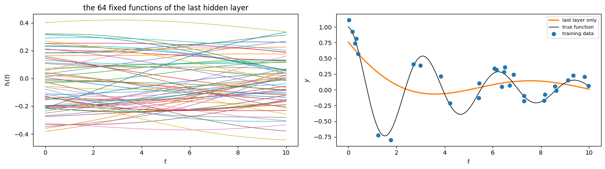